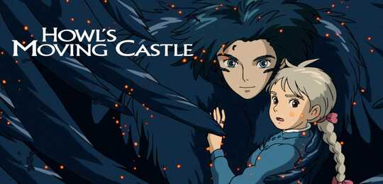
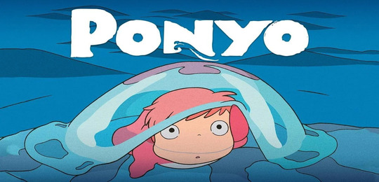
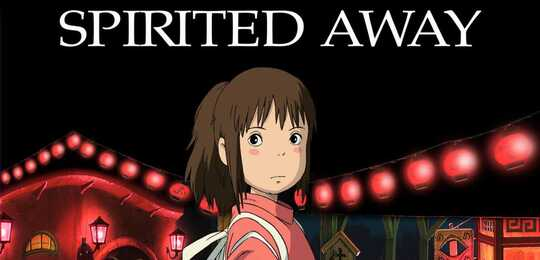
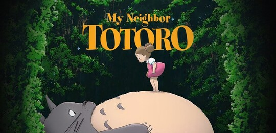
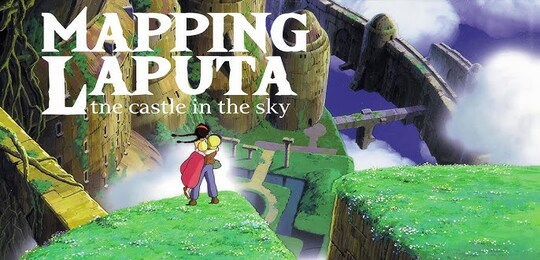

Home | About | Contact |
WELCOME

Welcome to the magical world of Studio Ghibli! 🌿✨
Here, we celebrate the timeless stories, breathtaking animation, and enchanting worlds created by one of the most beloved animation studios in history. From the peaceful countryside of My Neighbor Totoro to the whimsical bathhouse of Spirited Away, join us as we explore the beauty, wonder, and heart of Studio Ghibli's unforgettable films. Whether you're a long-time fan or a newcomer to these captivating tales, there's something here for everyone.
Step inside, and let your imagination take flight! 🌸
FILMOGRAPHY
- Howl's Moving castle 
- Ponyo 
- Spirited Away 
- My Neighbor Totoro 
- Castle In The Sky 
"An animated tour-de-force" – A.O. Scott, The New York Times
From the legendary Studio Ghibli, creators of Spirited Away, and acclaimed director Hayao Miyazaki, comes the Academy Award®- nominated fantasy adventure for the whole family.
Sophie, a quiet girl working in a hat shop, finds her life thrown into turmoil when she is literally swept off her feet by a handsome but mysterious wizard named Howl. The vain and vengeful Witch of the Waste, jealous of their friendship, puts a curse on Sophie and turns her into a 90-year-old woman. On a quest to break the spell, Sophie climbs aboard Howl's magnificent moving castle and into a new life of wonder and adventure. But as the true power of Howl's wizardry is revealed, Sophie finds herself fighting to protect them both from a dangerous war of sorcery that threatens their world."Magical... An extraordinary vision of a dazzling undersea world rich with visual wonders" – Kenneth Turan, Los Angeles Times
From the legendary Studio Ghibli, creators of Spirited Away and My Neighbor Totoro, and Academy Award®-winning* director Hayao Miyazaki, comes a heartwarming adventure, now featuring hours of new bonus features never-before-released in North America!
When Sosuke, a young boy who lives on a clifftop overlooking the sea, rescues a stranded goldfish named Ponyo, he discovers more than he bargained for. Ponyo is a curious, energetic young creature who yearns to be human, but even as she causes chaos around the house, her father, a powerful sorcerer, schemes to return Ponyo to the sea.
"Nothing less than magical!" – Joe Morgenstern, The Wall Street Journal
Winner of the Academy Award® for Best Animated Feature,Hayao Miyazaki's wondrous fantasy adventure is a dazzling masterpiece from one of the most celebrated filmmakers in the history of animation.
Chihiro's family is moving to a new house, but when they stop on the way to explore an abandoned village, her parents undergo a mysterious transformation and Chihiro is whisked into a world of fantastic spirits ruled over by the sorceress Yubaba. Put to work in a magical bathhouse for spirits and demons, Chihiro must use all her wits to survive in this strange new place, find a way to free her parents and return to the normal world. Overflowing with imaginative creatures and thrilling storytelling, Spirited Away became a worldwide smash hit, and is one of the most critically-acclaimed films of all time.
"One of the most beloved of all family films" – Roger Ebert
From the legendary Studio Ghibli, creators of Spirited Away and Ponyo, and Academy Award®-winning director Hayao Miyazaki, comes a classic tale of magic and adventure for the whole family.
When Satsuki and her sister Mei move with their father to a new home in the countryside, they find country life is not as simple as it seems. They soon discover that the house and nearby woods are full of strange and delightful creatures, including a gigantic but gentle forest spirit called Totoro, who can only be seen by children. Totoro and his friends introduce the girls to a series of adventures, including a ride aboard the extraordinary Cat Bus, in this all-ages animated masterpiece featuring the voices of Tim Daly, Lea Salonga, and real-life sisters Dakota and Elle Fanning, in one of their earliest roles.
"Stunning! A masterpiece of action filmmaking!" – Leonard Maltin.
Castle in the Sky is a timeless story of courage and friendship, with stunning animation from acclaimed Academy Award®-winning* director Hayao Miyazaki.
This high-flying adventure begins when Pazu, an engineer's apprentice, spies a young girl, Sheeta, floating down from the sky, held aloft by a glowing pendant. Both Sheeta and Pazu are searching for the legendary floating castle, Laputa, and they vow to travel there together to unravel the mystery of the luminous crystal. But their quest won't be easy, as soon they are being pursued by greedy air pirates, the military, and secret government agents, who all seek the power Sheeta alone can control.